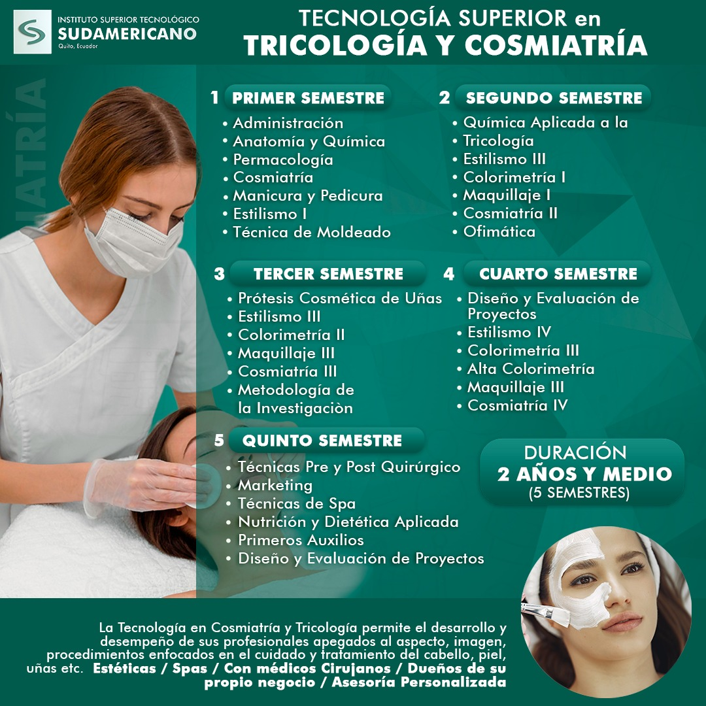

Hola, soy la creadora de Uñitas & Más. Este espacio lo dedico para compartir mi pasión por la manicura.
Me presento mi nombre es Cindy, soy Tecnóloga en Tricología y Cosmiatría,mi gusto por este mundo nace desde mi infancia, una anécdota que les puedo contar es que mi padre tiene el cabello churoso y a mí desde pequeña me gustaba peinarle, de ahí a mi madre pintarle las uñitas y por ende, intentar arreglarme a mí, de ahí viene la Pandemia del Covid 19 y no tenía mucho que hacer, así que busqué cursos para mi hobbie y de ahí nace seguir una carrera. Y ahora quiero enseñarleas parte de este gran mundo.
